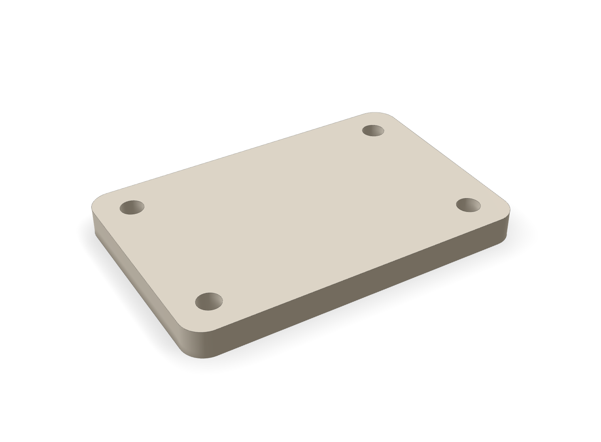

Dot Forge
FreeCAD · open-ended parts
Open-ended FreeCAD parts, checked against the original request
The request becomes a list of measurable checks. FreeCAD builds the part, and Dot Forge measures the result against that list.
01intent02plan03proof

Ø 4.00 through · 4 of 4
60 × 40 × 5 mm
conforms · 7 of 7 measured checks